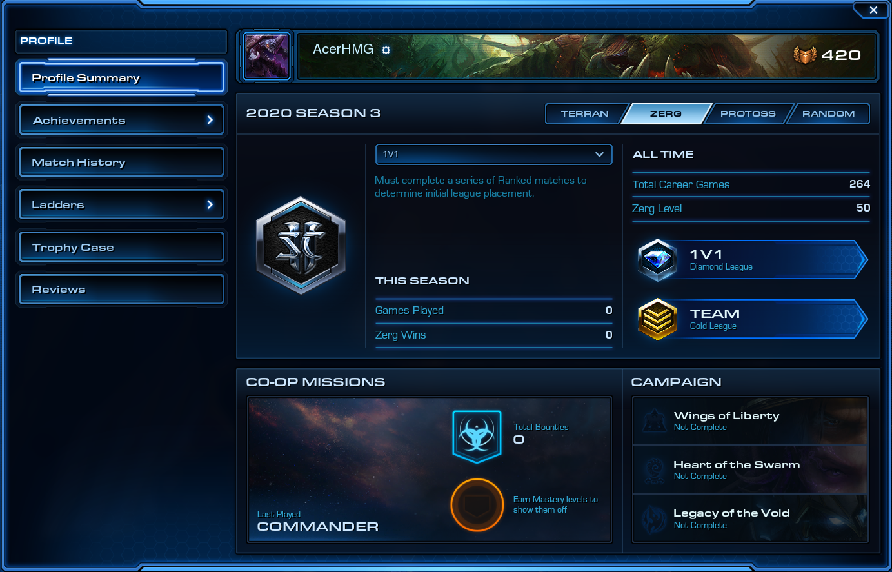
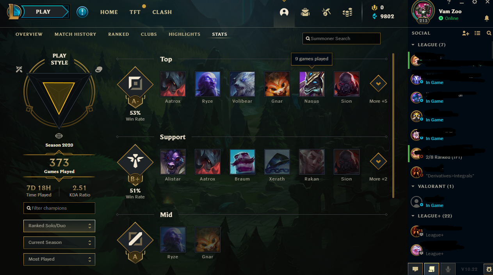

I really got into starcraft 2 during my freshman year in college. I would play so much that I rarely study... just like now... This is a terrible addiction that I have been trying to stop everysince I first played a video game as a kid. I remember sleeping at 6pm just to wake up at 1am or 2am to play on the computer. The game I would wake up to play was called Age of Empires and other games similar to it.
Later on in life I found out about league of legends! During that time of addicition to league, I played from sunrise to sunset without any breaks. It was the most terrible time of my life. As you can see, free games are not worth since they make me an addict that always give me adrenaline rush with terrible consequences. Therefore, pay to buy are more heatlhy for me.
